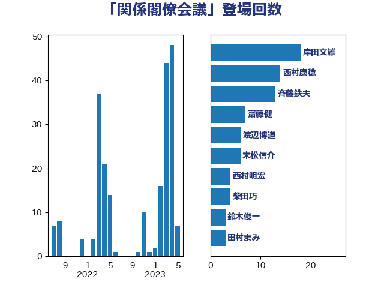

単語「関係閣僚会議」

| 赤羽一嘉 | 公明党 | 22 回 |
| 野上浩太郎 | 自由民主党 | 15 回 |
| 加藤勝信 | 自由民主党 | 7 回 |
| 末松信介 | 自由民主党 | 6 回 |
| 足立康史 | 日本維新の会 | 6 回 |
| 斉藤鉄夫 | 公明党 | 4 回 |
| 岸田文雄 | 自由民主党 | 3 回 |
| 田村憲久 | 自由民主党 | 3 回 |
| 西村康稔 | 自由民主党 | 3 回 |
| 鈴木俊一 | 自由民主党 | 3 回 |
| 高橋千鶴子 | 日本共産党 | 3 回 |
| 塩川鉄也 | 日本共産党 | 2 回 |
| 小沼巧 | 立憲民主党 | 2 回 |
| 山下貴司 | 自由民主党 | 2 回 |
| 山口壯 | 自由民主党 | 2 回 |
| 川田龍平 | 立憲民主党 | 2 回 |
| 後藤祐一 | 立憲民主党 | 2 回 |
| 朝日健太郎 | 自由民主党 | 2 回 |
| 柚木道義 | 立憲民主党 | 2 回 |
| 武田良太 | 自由民主党 | 2 回 |
| 江島潔 | 自由民主党 | 2 回 |
| 牧義夫 | 立憲民主党 | 2 回 |
| 田村まみ | 国民民主党 | 2 回 |
| 田村智子 | 日本共産党 | 2 回 |
| 笠井亮 | 日本共産党 | 2 回 |
| 菅義偉 | 自由民主党 | 2 回 |
| 金子恵美 | 立憲民主党 | 2 回 |
| 阿部知子 | 立憲民主党 | 2 回 |
| 麻生太郎 | 自由民主党 | 2 回 |
| 中山展宏 | 自由民主党 | 1 回 |
| 中村裕之 | 自由民主党 | 1 回 |
| 中西健治 | 自由民主党 | 1 回 |
| 中野洋昌 | 公明党 | 1 回 |
| 伊佐進一 | 公明党 | 1 回 |
| 勝部賢志 | 立憲民主党 | 1 回 |
| 吉川沙織 | 立憲民主党 | 1 回 |
| 坂本哲志 | 自由民主党 | 1 回 |
| 大家敏志 | 自由民主党 | 1 回 |
| 小川淳也 | 立憲民主党 | 1 回 |
| 小西洋之 | 立憲民主党 | 1 回 |
| 山下芳生 | 日本共産党 | 1 回 |
| 山崎誠 | 立憲民主党 | 1 回 |
| 山本香苗 | 公明党 | 1 回 |
| 山谷えり子 | 自由民主党 | 1 回 |
| 岡本三成 | 公明党 | 1 回 |
| 岬麻紀 | 日本維新の会 | 1 回 |
| 岸信夫 | 自由民主党 | 1 回 |
| 平木大作 | 公明党 | 1 回 |
| 庄子賢一 | 公明党 | 1 回 |
| 徳永エリ | 立憲民主党 | 1 回 |
| 本庄知史 | 立憲民主党 | 1 回 |
| 柴田巧 | 日本維新の会 | 1 回 |
| 梅谷守 | 立憲民主党 | 1 回 |
| 梶山弘志 | 自由民主党 | 1 回 |
| 橋本聖子 | 無所属 | 1 回 |
| 津島淳 | 自由民主党 | 1 回 |
| 浅野哲 | 国民民主党 | 1 回 |
| 渡辺猛之 | 自由民主党 | 1 回 |
| 玄葉光一郎 | 立憲民主党 | 1 回 |
| 石井苗子 | 日本維新の会 | 1 回 |
| 礒崎哲史 | 国民民主党 | 1 回 |
| 竹内真二 | 公明党 | 1 回 |
| 紙智子 | 日本共産党 | 1 回 |
| 藤井比早之 | 自由民主党 | 1 回 |
| 西岡秀子 | 国民民主党 | 1 回 |
| 足立敏之 | 自由民主党 | 1 回 |
| 遠藤利明 | 自由民主党 | 1 回 |
| 野田佳彦 | 立憲民主党 | 1 回 |
| 野田国義 | 立憲民主党 | 1 回 |
| 鈴木英敬 | 自由民主党 | 1 回 |
| 高村正大 | 自由民主党 | 1 回 |
| 高橋光男 | 公明党 | 1 回 |
| 鳩山二郎 | 自由民主党 | 1 回 |